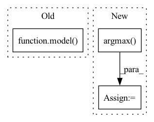

Pattern ID :29241

Before Change
for batch_idx, (x, target) in enumerate(test_data):
x = x.to(device)
target = target.to(device)
pred = model(x)
loss = criterion(pred, target)
_, predicted = torch.max(pred, -1)
correct = predicted.eq(target).sum()
After Change
loss = y_pred[0]
accuracy = y_pred[1]
correct = tf.equal(tf.argmax(y, 1), tf.cast(target, tf.int64))
// metrics["test_correct"] += tf.reduce_mean(tf.cast(correct, tf.float32))
metrics["test_loss"] += loss * target.size(0)
In pattern: SUPERPATTERN
Frequency: 3
Non-data size: 3
Instances
Fragment ID: 85975471
Project Name: fedml-ai/fedml
Commit Name: 9e66b6521a89e76f568a18fc69f0e6cf7c3c6166
Time: 2022-08-14
Author: alex.gpt.llm@gmail.com
File Name: python/examples/cross_silo/tf-mqtt_s3_fedavg_mnist_lr_example/tf_model_trainer_classification.py
M Class Name: TfModelTrainerCLS
N Class Name: TfModelTrainerCLS
M Method Name: test(4)
N Method Name: test(4)
M Parent Class: ClientTrainer
N Parent Class: ClientTrainer
M File Name: python/examples/cross_silo/tf-mqtt_s3_fedavg_mnist_lr_example/tf_model_trainer_classification.py
N File Name: python/examples/cross_silo/tf-mqtt_s3_fedavg_mnist_lr_example/tf_model_trainer_classification.py
M Start Line: 68
M End Line: 90
N Start Line: 51
N End Line: 65
'>
Before Change
for batch_idx, (x, target) in enumerate(test_data):
x = x.to(device)
target = target.to(device)
pred = model(x)
loss = criterion(pred, target)
_, predicted = torch.max(pred, -1)
correct = predicted.eq(target).sum()
After Change
loss = y_pred[0]
accuracy = y_pred[1]
correct = tf.equal(tf.argmax(y, 1), tf.cast(target, tf.int64))
// metrics["test_correct"] += tf.reduce_mean(tf.cast(correct, tf.float32))
metrics["test_loss"] += loss * target.size(0)
'>
Fragment ID: 85975470
Project Name: fedml-ai/fedml
Commit Name: 51350e5aa8f340f92f5a5ff1f2f88cd9ab1fe47f
Time: 2022-08-14
Author: alexliang.kh@gmail.com
File Name: python/examples/cross_silo/tf-mqtt_s3_fedavg_mnist_lr_example/tf_model_trainer_classification.py
M Class Name: TfModelTrainerCLS
N Class Name: TfModelTrainerCLS
M Method Name: test(4)
N Method Name: test(4)
M Parent Class: ClientTrainer
N Parent Class: ClientTrainer
M File Name: python/examples/cross_silo/tf-mqtt_s3_fedavg_mnist_lr_example/tf_model_trainer_classification.py
N File Name: python/examples/cross_silo/tf-mqtt_s3_fedavg_mnist_lr_example/tf_model_trainer_classification.py
M Start Line: 68
M End Line: 90
N Start Line: 51
N End Line: 65
'>
Before Change
images = (images.float() / 255.0).unsqueeze(dim=1).to(device)
// Categogrical encoding
labels = torch.eye(10).index_select(dim=0, index=labels).to(device)
loss = criterion(images, labels, *model(images))
total_loss += loss
loss.backward()
optimizer.step()
After Change
logits, reconstruction = model(images, labels)
// Compute loss & accuracy
loss = criterion(images, labels, logits, reconstruction)
accuracy = torch.sum(
torch.argmax(logits, dim=1) == torch.argmax(labels, dim=1)).item() / len(images)
total_loss += loss
loss.backward()
optimizer.step()
'>
Fragment ID: 85975468
Project Name: riroaki/capsnet
Commit Name: 93663bc0187864478e3173675639202ad534b132
Time: 2020-03-08
Author: aki@akideMacBook-Pro.local
File Name: main.py
M Class Name: AnonimousClass
N Class Name: AnonimousClass
M Method Name: main(0)
N Method Name: main(0)
M Parent Class:
N Parent Class:
M File Name: main.py
N File Name: main.py
M Start Line: 42
M End Line: 72
N Start Line: 39
N End Line: 73